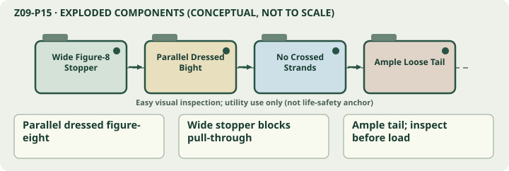

Z09-P15 · Tools and construction · New manuscript
Tie a figure-eight loop and stopper knot for secure termination
Form a high-visibility, slip-resistant stopper knot and fixed end-loop for utility lines in wet or gloved hands.
When it applies · Preventing lines from pulling through grommets/pulleys and tying secure non-slip end loops in utility cordage.
Equipment · Utility rope or tarp cordage.

Actions
- Tie a simple figure-eight stopper at line ends to stop cord from slipping through grommets, tarp eyelets or tensioners—its wider bend unties far easier than a jammed overhand knot.[K15, ED]
- Tie a figure-eight on a bight (folded double line) for a strong, easily inspected fixed utility loop that resists shaking loose under alternating wind gusts.[K15, ED]
- Dress all parallel strands smoothly side-by-side without crossed twists and leave a generous tail beyond the final collar.[K15, ED]
Failure recognition · Using a tiny single overhand stopper that jams permanently under load or pulls straight through a wide tarp grommet.[K09]
Verify · Visually confirm the clear figure-eight silhouette with parallel flat strands and an ample tail before applying utility tension.[K15, ED]
Stop or change course · Remember that even cleanly dressed figure-eight loops in camp utility cordage are NOT certified life-safety climbing anchors.[K09]
Evidence and editorial notes
- K09 · USDA Forest Service · Handtools for Trail Work (0523-2810-MTDC) (agency handbook)
- Section: Cordage, Anchors and Rigging Boundaries · Conditions: Non-life-safety camp lashing, tarps, haul lines and tie-downs
Support: Cordage strength drops significantly at knots, sharp bends, wet fibers, UV exposure and abrasion; inspect fibers before loading and never use unrated camp cord or improvised bindings for life-safety suspension or climbing.
Limitations: No universal breaking strength applies to natural plant fibers or weathered salvaged rope. · Conflicting evidence: Counters folklore claims equating improvised cordage to rated climbing rope.
Editorial note: Separates camp utility lashing/hauling from life-safety rigging. · Specialist reviewer: Rigging safety and materials mechanics
Primary source · checked 2026-11-24
Current assessment · W2C-E004 (2026-11-25) · Open: cited section not found in the source; escalated: Replacement support identified in FM 3-97.61 paras 4-1 to 4-3 (pages 4-1 to 4-3): sharp edges cut nylon rope under tension; leaving rope knotted or tightly stretched reduces strength and life over time; ultraviolet light deteriorates nylon; inspect before and after each use; select rope by task, type, diameter and tensile strength. Limits: No support found for the wet-fiber strength-loss part of K09. FM context is mountaineering rope, not camp cord. - K15 · HQ Department of the Army · FM 3-97.61 Military Mountaineering, chapter 4 rope management and knots (approved for public release) (August 2002 edition; superseded by TC 3-97.61 (July 2012))
- Section: Chapter 4 Section III, 4-14 Figure-eight retrace (figure-eight knot description) and 4-20 Figure-eight loop checkpoints (pages 4-15, 4-21 to 4-22) · Conditions: Tying a figure-eight knot in a line end or a figure-eight loop in a doubled line
Support: A figure-eight knot is formed by making a loop, wrapping the working end around the standing part and routing it through the loop. The figure-eight loop forms a fixed loop; the ropes in the loop are parallel and do not cross over each other, and the knot is tightly dressed.
Limitations: Written for mountaineering rope. No rating for utility cord, grommet size or pull-through resistance. Superseded 2002 edition. · Conflicting evidence: None.
Editorial note: Grounds the Z09-P15 stopper and loop structures. The grommet-blocking use of the stopper remains an editorial adaptation. · Specialist reviewer: Rigging safety and field education
Primary source · checked 2026-11-25
Current assessment · W2C-E002 (2026-11-25) · Bounded primary support recorded: A figure-eight knot is made by forming a loop, wrapping the working end around the standing part and routing it through the loop; the figure-eight loop forms a fixed loop whose ropes run parallel without crossing, tightly dressed. Limits: No statement on grommet size or pull-through; the stopper use at a grommet remains editorial. Superseded edition.
Source lineage · USFS cordage safety; new manuscript · Classification · New manuscript.